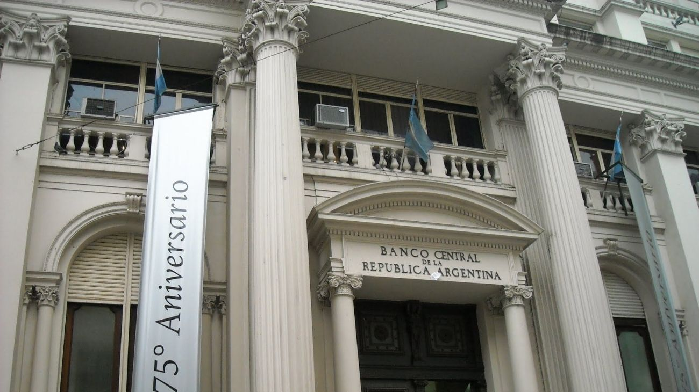

El BCRA fortalece las reservas con un nuevo acuerdo REPO por USD 3.000 millones
El Banco Central cerró un nuevo acuerdo REPO con bancos internacionales por USD 3.000 millones, con el objetivo de fortalecer las reservas, reflejando un mayor interés del mercado y una mejora en el acceso al financiamiento externo.

La operación se realizó a un plazo de 372 días y contempla una tasa de interés equivalente a la SOFR en dólares estadounidenses más un spread de 400 puntos básicos, lo que representa un costo anual del 7,4%. Este esquema permitió al BCRA acceder a financiamiento en condiciones de mercado, fortaleciendo su liquidez en moneda extranjera.
El proceso de licitación registró una fuerte demanda, con ofertas que alcanzaron los USD 4.400 millones, superando en aproximadamente un 50% el monto finalmente adjudicado.
A pesar de este interés, el Banco Central decidió no ampliar el volumen de la operación, en línea con sus proyecciones sobre la evolución de las reservas.
Desde la entidad destacaron que el elevado interés de los bancos internacionales refleja una mejora en el acceso al crédito externo y un mayor grado de confianza en el rumbo de la política económica.
Este contexto se da en paralelo con una reducción del riesgo país y un proceso de ordenamiento macroeconómico.
Con esta nueva operación REPO, el BCRA busca consolidar la solidez de su balance y reforzar la posición de reservas internacionales, ratificando su capacidad para gestionar de manera eficiente la liquidez en moneda extranjera y acceder a instrumentos de financiamiento en condiciones de mercado.